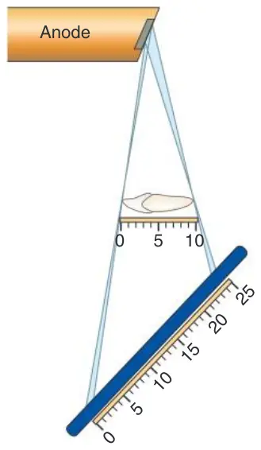
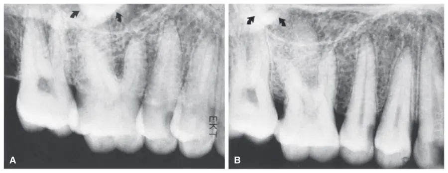

نسخه استخراجشده؛ ترجمه یا تأیید علمی انجام نشده است. وضعیت: captured
هر بار که دندان روی تصویر کوتاهتر یا بلندتر از واقعیت درمیآید، یکی از دو قاعده نقض شده است. و تعریف پدیده ساده است: «اعوجاج شکل تصویر، نتیجهی بزرگنمایی نابرابر بخشهای مختلف یک جسم واحد است. این وضعیت وقتی پدید میآید که همهی بخشهای جسم در یک فاصلهی منبع-تا-جسم نباشند.»

و دو خطای کلاسیک، دو علت متفاوت دارند:
پس تفاوت را در یک جمله نگه دار: اگر گیرنده سر جایش است و دندان کج است ← کوتاهشدگی. اگر دندان سر جایش است و گیرنده کج است ← کشیدگی.
و دو راهنمای اصلاح، دقیقاً همان دو قاعدهاند:
و جمعبندی: «پزشک میتواند از خطاهای اعوجاج شکل پیشگیری کند با همراستا کردن جسم و گیرنده بهطور موازی با یکدیگر، و پرتو مرکزی عمود بر هر دو.»
یک ناحیه هست که در آن، هر دو قاعده را هم که رعایت کنی باز اعوجاج میماند: «این اعوجاج بیش از همه در نماهای مولر ماگزیلا آشکار است، جایی که واگرایی ریشههای باکال و پالاتال مانع از قرار دادن همهی ریشهها بهطور موازی با گیرنده میشود، و ریشههای پالاتال بهطور نامتناسبی بلندتر از ریشههای باکال دیده میشوند.»

و پیامد دومش که کمتر به آن توجه میشود: اعوجاج «رابطهی ارتفاع کرست آلوئولار نسبت به محل اتصال مینا و سمان را هم مخدوش میکند» — یعنی همان چیزی که برای ارزیابی پریودنتال به آن تکیه میکنی.
و راه کاهشش: «افزایش فاصلهی منبع-تا-جسم با استفاده از مخروط بلند، این اعوجاج را محدود میکند.» چون پرتوها در محل جسم موازیتر میشوند و تفاوت زاویه میان ریشهی باکال و پالاتال کمتر اثر میگذارد.
و حالا مهمترین جملهی این درس دربارهی مسئولیت تو: «بیشتر اعوجاجها از زاویهدهی نادرست پرتو ایکس ناشی میشوند، نه از انحنای ساختارهای مورد بررسی یا جایگذاری نامناسب گیرنده.»
یعنی مقصر معمولاً دست توست، نه آناتومی بیمار. «توجه دقیق به موقعیتدهی درست گیرنده و تیوب ایکس، بر پایهی اصول هندسهی پروجکشن، به تصاویری با کارایی تشخیصی میانجامد.»
و دو معیار عددی کیفیت که با همین هندسه گره خوردهاند:
و یک قاعدهی عملی که از تکرار بیمورد جلوگیری میکند: «برای نمونه، یک پروجکشن در یک سری فولماوث ممکن است در باز کردن یک کانتکت یا نشان دادن یک ناحیهی پریاپیکال شکست بخورد. ولی اگر آن اطلاعات گمشده روی نمای دیگری موجود باشد، تکرار لازم نیست.»